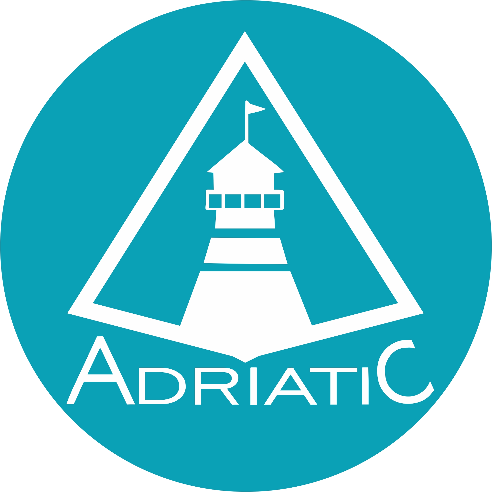
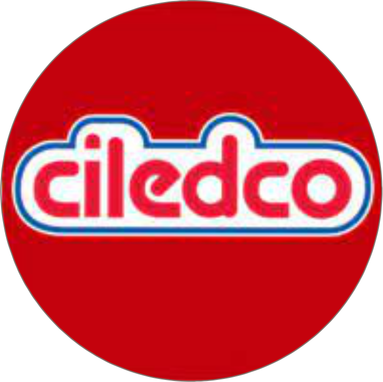
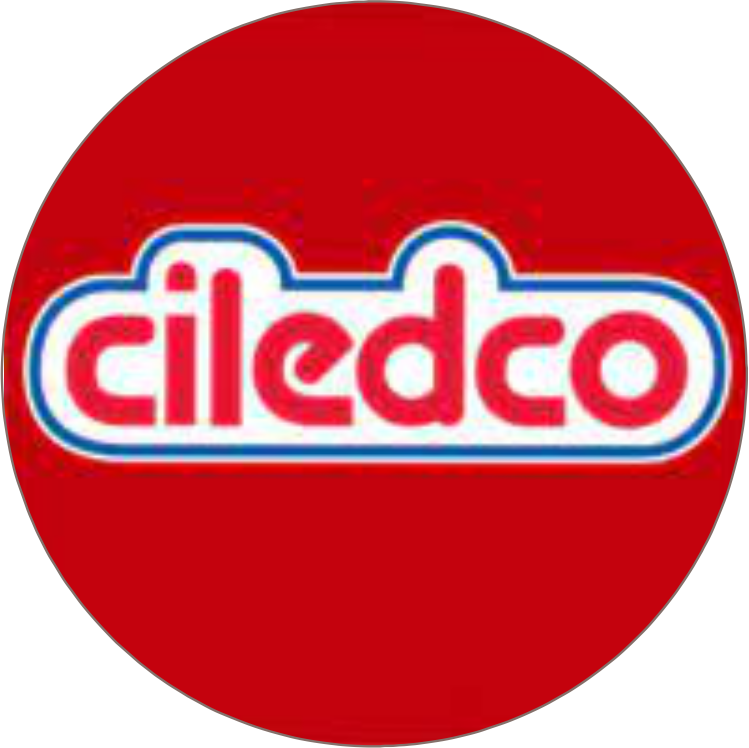

Historia
Nacido en Barranquilla-Colombia. Desde muy niño fui muy curioso, siempre queriendo saber como funcionaban las cosas. A los siete años ya podia desarmar casi que cualquier aparato que tuviera tornillos, eso si, no garantizaba que puediera armarlas de nuevo. En mi adolecencia no fue la excepción, en esta epoca ya desarmaba y reparaba televisores, radios, Vhs, etc, siempre ese espiritu curioso acompañándome. Salgo del bachillerato queriendo estudiar una ingenieria de sistemas o ingenieria electronica, en esos momentos la situacion economica familiar no me lo permitia. opte por estudiar contaduria publica, siempre le tuve cariño a los números, asi que me pareció una buena opcion.
Perfil profesional
Contador Público de la Universidad libre de Barranquilla con especialización en finanzas territoriales de la Universidad del Atlántico y conocimientos en programación y elaboración de herramientas digitales, con mas de 10 años de experiencia en empresas del sector industrial y comercial. Me caracterizo por ser una persona creativa y emprendedor.
Logros
- Elaboré herramienta para la gestión de las importaciones aumentado con esta la confiabilidad de la información y reduciendo el tiempo de registro para el departamento de contabilidad.
- Reduje los tiempos de entrega y el numero de personas a cargo de las funciones de conciliaciones bancarias y entrega de los informes a directivos de la empresa.
- Automaticé el proceso de registro contable de la nomina.
- Implemente nuevos procesos para la auditoria de cartera
- Elaboré herramienta para la gestion de licitaciones
Experiencia laboral

 
